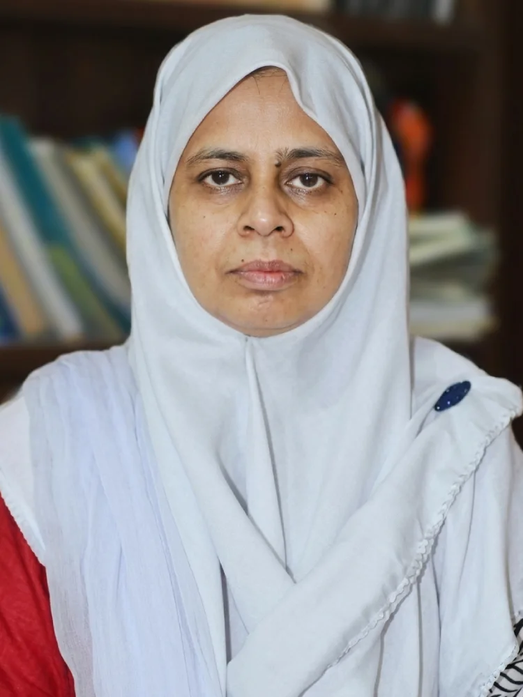

US-Pakistan Center for Advanced Studies in Water
Dr. Arjumand Zehra Zaidi
Senior Research Fellow · Environmental evaluation and decision making · Water resources, disaster management and geospatial analysis
About

- Email arjumand.uspcasw@faculty.muet.edu.pk
- Education PhD (GMU) · MS (GMU) · BS (NED)
- CV Download CV
My professional experience is in the field of environmental evaluation and decision making. My research interests include optimization and modeling of water resources, environmental, and disaster management systems. Most of my research work deals in environmental decision making with the help of various numerical techniques and Geographical Information Systems (GIS) using satellite data.
Currently, I am working in the US-Pakistan Center for Advanced Studies in Water (USPCAS-W), Mehran University of Engineering & Technology, Jamshoro, Pakistan, as a Senior Research Fellow.
Courses
Hazard Planning and Risk Management
Geospatial tools and data for mapping hazards and assessing risk. Lecture materials, reading lists, assignments and quizzes.
More courses
Additional course materials will be added here as they are prepared.